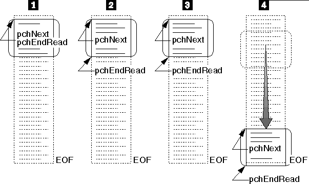

Advancing a File I/O Buffer for Reading
The following figure shows how the file I/O buffer is advanced as a file
is read from.
- The application opens the file for buffered
I/O. The buffer is initially empty, so mmioOpen sets pchNext and
pchEndRead to point to the beginning of the file I/O buffer.
- The application calls mmioAdvance to fill
the I/O buffer. The mmioAdvance function fills the buffer and sets pchNext
to point to the beginning of the buffer.
- The application reads from the I/O buffer
and increments pchNext.
- The application continues to read the buffer
and call mmioAdvance to refill the buffer when it is empty. When mmioAdvance
reaches the end of the file, there is not enough information to fill the
buffer. The mmioAdvance function sets pchEndRead to point to the
end of the valid data in the buffer.
[Back: Advancing the File I/O Buffer]
[Next: Advancing a File I/O Buffer for Writing]